The paper in four points
TL;DR: KISS-GS compresses 3D Gaussian Splatting scenes 228× at the quality of vanilla 3DGS and stores each scene as nine ordinary images.
KISS-GS is a compression pipeline for 3D Gaussian Splatting scenes. Its output is a set of ordinary images that any device can decode. The 228× is the Mip-NeRF 360 average at the quality of the uncompressed reference; the factor depends on the dataset, 85× on Deep Blending, 228× on Mip-NeRF 360 and 319× on Tanks and Temples. On Mip-NeRF 360 and Tanks and Temples no published method reaches that quality from a smaller file. The paper makes four contributions.
- A modular pipeline whose gains are attributable. Reconstruction, compaction, encoding and optional encoding-aware fine-tuning are separate stages, and each hands on a standard 3DGS scene. So each stage is measured on its own, 15.7×, 6.6× and 2.2× on Mip-NeRF 360, and any of them can be swapped for a better one. → How it works
- POPSpa: fewer primitives, chosen well. A compaction recipe assembled from published pruning schemes. It earns the largest share of the reduction, before any encoding happens. → Compaction
- SOG-XT: attributes stored as sorted images. Extends the popular Self-Organizing Gaussians format with a view-dependent color codebook that is itself sorted into a 2D image, so its indices compress like every other plane. → Encoding
- PRAS: one form per Gaussian. A Gaussian’s rotation and scale can be written 48 equivalent ways. PRAS picks, for every primitive, the one closest to a smoothed version of its neighbors, so the attribute images survive a coarser quantizer. → PRAS
Decoding is a few image decodes and codebook lookups, nothing more. Whether that counts as keeping it simple is a question we come back to at the end.
A full 3DGS scene, in 3.94 MB
The scene in the renderer is the whole file, 3.94 MB, decoded and rendering live in your browser. It is the Mip-NeRF 360 Garden scene, and it arrived as a SOG-XT container: nine ordinary images and a small text file. What is inside shows the images themselves.
Go on, drag it. WASD moves you around. It is a renderer, not a video.
The usual way to store this scene is a vanilla 3DGS .ply: the output of the original INRIA
implementation, and the reference every compression paper measures against. On Mip-NeRF 360 it
averages 738 MB. KISS-GS files for the same dataset are 228×
smaller at the same PSNR. We still find it a little absurd how much detail fits in a file this
size.
How small can it go before it stops looking like this? That is the next question. After it, how the pipeline gets there.
How small do you want it?
Compression methods are compared on rate–distortion curves, not on single points. A single size-and-quality number cannot rank them, because every method can trade one for the other. So the paper plots quality against file size, one curve per method, and if one curve sits above another everywhere, that method is better at every operating point. Here is the curve for the live scene; the other methods join it in the results.
Rate–distortion for this scene
Current scene · PSNR
SOG-XT-FT operating points for the current scene and the uncompressed INRIA-Q reference. Up and to the left is better.
The slider moves one number: how many primitives the scene keeps after compaction, a stage the next section explains. That is the primary rate knob, and it also makes the scene cheaper to render, encode and decode. Reaching the same file size with more primitives and heavier compression would cost more on all three for no gain. The paper measures seven budgets per scene, each a doubling of the last, which is why the size axis is logarithmic and the points sit evenly along it.
The budgets themselves depend on the dataset, and they are the only setting that changes between datasets: a Blender object needs far fewer primitives than a real-world capture, so its ladder starts lower and ends lower. Everything else is shared. The compaction recipe and the encoder’s settings are the same for every scene, from a few thousand primitives to several million, and the same encoder settings also encode the vanilla 3DGS baseline. The budget is the primary knob and not the only parameter: the color codebook’s side length is derived from the primitive count after compaction and then clamped. The concrete numbers are in the renderer: pick scenes from different datasets, run the slider from end to end, and read the primitive count and the file size off the scene card.
The live scene is at 3.94 MB, and the slider above moves it as well. Two encodings seen from two different positions cannot be compared, so turn Motion off when you want the camera to hold still.
Quality stops climbing before the track runs out. On 4 of the 21 scenes the paper’s best measured PSNR is not at the largest size: Treehill peaks at 3.73 MB and has given back 0.21 dB by 25.08 MB. Past some budget the extra Gaussians likely overfit: they model detail the training views do not support well, and the held-out test views do not reward it, so the curve flattens and then dips.
738 MB → 3.2 MB, and we can say where every × came from
Four stages, each handing on a standard 3DGS scene, so every factor has a stage that earned it. Most compression papers report one number at the end of a pipeline that fuses half a dozen tricks, which makes it hard to tell which trick did the work. Was it the change in representation, the encoding or the clever training? We call that the attribution gap, and closing it is why KISS-GS is built the way it is.
- Reconstruction gsplat MCMC 30k iterations, default parameters a standard 3DGS .ply Replaceable: any implementation's .ply, such as INRIA, gsplat or Lichtfeld Studio
- Compaction POPSpa 10k iterations: prune, refine, prune again the same .ply with far fewer primitives Replaceable: any pruning or compaction method
- Encoding SOG-XT sort, quantize, save as images nine images and a metadata file Replaceable: any post-training encoder
- Fine-tuning codec in the loop 4k iterations, optional the same nine images with better values Replaceable: skip it; format and decoder are unchanged
Measured on Mip-NeRF 360, at the quality of the uncompressed reference, here is what each stage
bought. The top bar is that reference, the vanilla 3DGS .ply the field compares against, which the
plots below call INRIA-Q; our own pipeline starts from a gsplat MCMC reconstruction of the same
scenes (30k iterations, default parameters).
-
vanilla 3DGS .ply INRIA, 40k iterations738 MB the reference, not our input
-
POPSpa compaction: prune, optimize, prune again÷ 15.747 MB fewer, better primitives
The biggest share, and it happens before any encoding: reference quality from far fewer primitives, which also render, encode and decode faster.
-
SOG-XT encoding: sort, quantize, save as images÷ 6.67.1 MB nine small images
Pure post-processing: no training loop, no cameras. The same settings encode any standard .ply, including the INRIA baseline.
-
fine-tuning adaptation: codec in the loop, optional÷ 2.23.2 MB same PSNR as the .ply
Optional. Needs a GPU and the training views; the same nine images come out with better values in them, and the decoder does not change.
15.7 × 6.6 × 2.2 = 228× smaller, at the same quality.
Two of those factors are the paper’s contributions and get a section each further down: POPSpa compacts, SOG-XT encodes. The reconstruction is off-the-shelf gsplat MCMC, and the encoding-aware fine-tuning is optional: it changes nothing about the file or the decoder.
How the fine-tuning stage works
Fine-tuning is optional and changes the values, not the format: the same nine images come out, with better numbers in them. Each step runs the codec round trip inside the training loop: the current Gaussians are written to the quantized planes exactly as SOG-XT stores them, decoded, rendered, and the rendering loss is backpropagated through that round trip, with a straight-through estimator standing in for the gradient that rounding does not have. Positions, scales, rotations, opacities and base color are all trained this way; view-dependent color through its codebook, whose centroids are re-averaged every step while the assignments stay fixed.
The layout stays fixed. The active mask, the PLAS order and the sorted codebook grid are set at the start; the PLAS sort is not differentiable, and re-sorting would hand the optimizer a new layout to start over from. PRAS is re-run twice during the run, because it changes only which form of a covariance is stored, never the layout. Light total-variation losses on the quantized planes push the same way.
It runs for 4k iterations and buys
2.2× on Mip-NeRF 360 at reference quality. It is also the most expensive
stage for its size: on Bicycle at 512k primitives, encoding takes half a minute and fine-tuning
seven, and it needs a GPU and the training views, which the post-hoc encoder does not. Worth
running when bytes matter more than encoder minutes and the cameras are at hand; a bare .ply
stops after SOG-XT and forgoes only this factor. The decoder cannot tell the difference. The trick
rests on the quantizer being ours and holding still; a lossy image codec induces a loss of the
same kind but owns its quantizer, opaque to the training loop, which is why lossy codecs are in
the graveyard and this stage is not.
Source: paper Fig. 1 and Sec. 3, with the baseline synchronized to the paper intro's 738 MB INRIA-Q value. The strip states each stage's module and what it hands on; the paper's own figure also contrasts per-stage alternatives with integrated methods.
Twenty-one scenes, one protocol
One recipe, 21 scenes, the original 3DGS evaluation protocol. The scenes are the standard 3DGS benchmark across 4 datasets: Mip-NeRF 360 (indoor rooms and outdoor 360° captures), Tanks and Temples, Deep Blending, and the synthetic Blender objects. Bounded and unbounded, real and rendered, clean and messy. Any of them can be loaded into the renderer here.
The scenes, the splits, and how everything is trained and measured are the protocol of the original 3DGS paper. It was never written down as one; it was implicit in the released code, and the 3DGS.zip survey later spelled it out: training resolution fixed per dataset, evaluation at 1600 px on the long side, LPIPS on the VGG backbone with images in their 0–1 range. We follow it and state it, because deviating from any part of it moves the reported numbers by more than most methods differ from each other. KISS-GS and HAC++ are recomputed under it in the results below; the other literature curves are self-reported and marked as such.
Pick any scene above and the recipe behind it is the same one. There is no per-scene tuning. The two places the settings do vary are stated: the smallest primitive budget is lower for the Blender objects than for the real captures, and the initial over-parameterized model is capped per dataset. A method with a knob per scene has 21 separate results and no general one.
Fewer primitives, chosen well
Compaction earns the largest share of the reduction, 15.7× of the 228×, by choosing which primitives survive. The slider in the renderer moves that one number, and more than the encoder that follows, the choice of which primitives stay decides the result.
POPSpa is how we spend that budget. It is a recipe made of published parts, and it runs on a finished 3DGS scene: score and prune, optimize and sparsify, score and prune again, refine.
-
Score, then prune GaussianPOP
For every primitive, estimate how much the rendered image would change if it were removed. The score is the squared color difference between the render with it and the render without it, accumulated over all the training views. One efficient single pass produces that score for every primitive at once, and the lowest-scoring fraction goes.
-
Optimize and sparsify 5k iterations GaussianSpa
Pruning that hard leaves damage. So the survivors get 5k iterations that alternate between an ordinary reconstruction step and a sparsification step, which is how GaussianSpa states primitive selection: minimize the rendering loss subject to a hard limit on how many primitives may keep their opacity. Nearby Gaussians redistribute opacity and geometry to cover what was removed.
-
Regularize the shapes Hyung et al., effective rank
Added to that same stage, and borrowed wholesale. Effective rank measures how many dimensions a Gaussian actually occupies; regularizing it away from 1 discourages the needle-shaped primitives that overfit training views and streak in novel ones, and towards the disk shapes that describe a surface. Fewer primitives makes every remaining one matter more, which is why this belongs here and not in reconstruction.
-
Score again, then refine 5k iterations GaussianPOP
Redistribution makes a second set of primitives redundant, so the scores are recomputed and a second prune removes them. A final 5k iterations recover what the two prunes cost: 10k of post-processing in total, against the 30k the reconstruction itself took.
We want to be clear about what is ours here. There is no new pruning objective: the scores are GaussianPOP’s, the optimize–sparsify alternation is GaussianSpa’s, the effective-rank term is Hyung et al.'s. Our part is putting them together, tuning them for compression and measuring what the combination does. And the whole stage is replaceable: a standard 3DGS scene goes in, a standard 3DGS scene with fewer primitives comes out, so a better compaction method drops into this slot without touching the format, the encoder or the decoder. That is why the 15.7× and the 6.6× are reported separately: each can be checked on its own, and each can be beaten on its own.
Source: paper Sec. 3.2, Compaction with POPSpa. Iteration counts and the two-prune order are the paper's; the scores, the sparsity formulation and the effective-rank term are the cited works'.
What is inside 3.94 MB?
A KISS-GS scene is nine ordinary images and a small text file describing them. Every Gaussian is one pixel in every image, and every Gaussian attribute is one image plane in the set: where it is, how big, which way round, what color, and how that color changes with your viewing angle.
Encoded attributes
The complete 3.94 MB scene, by attribute.
The file’s cost therefore decomposes exactly. Each plane is compressed on its own, with no shared entropy budget and no interleaved bitstream to unpick, so each attribute has a byte count you can point at. The bar above is measured from the file itself: the last segment is the container’s own metadata and its active mask, which is why the segments add up to the megabytes on the scene card.
View-dependent color dominates everything else. These are the spherical-harmonic coefficients that make a surface look wet or metallic, and they are the one attribute the encoder gives a codebook rather than a plain quantizer.
Position is the floor. It is the one plane that cannot be given up, because a scene without positions is noise. It is also two planes, a coarse byte and a detail byte, and the next section depends on that split.
Attribute inspector
The planes the bar counts are these images, the actual files the renderer fetched for this scene.
Show me the actual images
These are the files, exactly as the scene above is shipping them. The renderer fetched these same URLs. They are laid out by PLAS, the sort the Encoding section explains, so a bright patch is a region of the scene, and one pixel is one Gaussian in every plane at once: point at a pixel and the renderer moves to that primitive. Tap or click to keep it; arrow keys step pixel by pixel once an image has focus.
The cursor is synchronized across every attribute, and the values describe the selected source pixel. In image coordinates (u, v), the live probe position is
-
Position, high byte
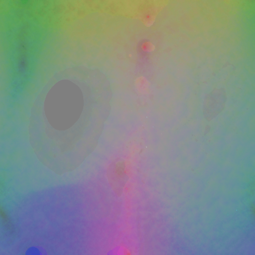
512 × 512 × 3 219.6 kB means_bytes_1.webpPIXELDECODED -
Position, low byte
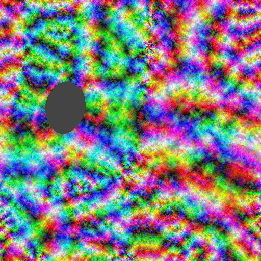
512 × 512 × 3 630.3 kB means_bytes_0.webpPIXELDECODED -
Base colour
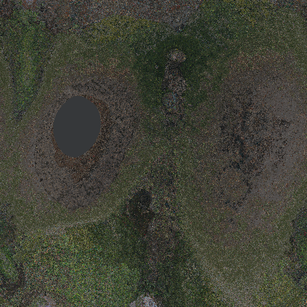
512 × 512 × 3 526.3 kB f_dc.webpPIXELDECODED -
Opacity
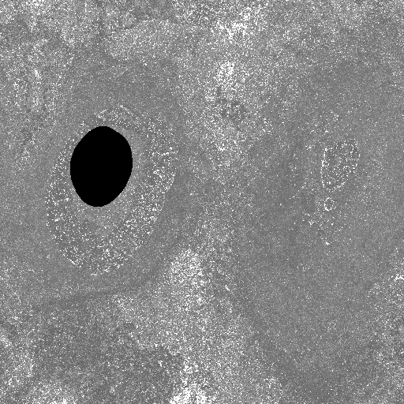
512 × 512 × 1 200.9 kB opacities.webpPIXELDECODED -
Scale
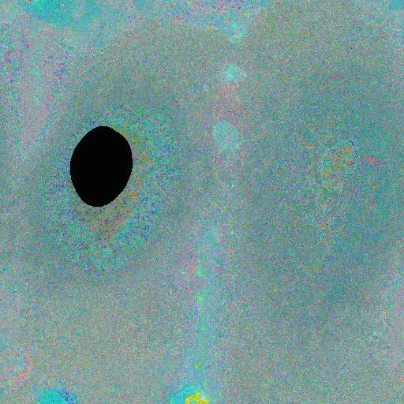
512 × 512 × 3 608.8 kB scales.webpPIXELDECODED -
Rotation
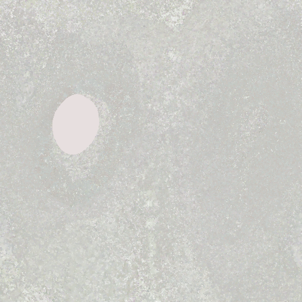
512 × 512 × 4 590.1 kB quaternions.webpPIXELDECODED
-
Active mask
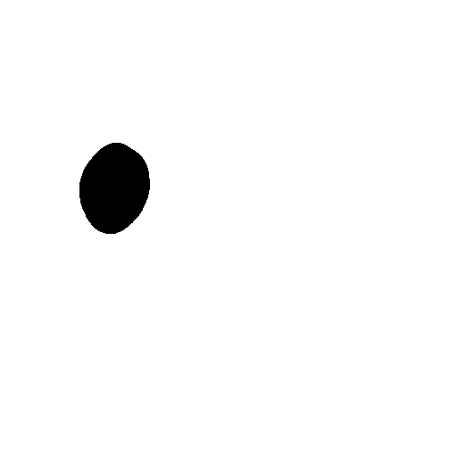
512 × 512 × 1 266 B active_mask.webpPIXELDECODED
View-dependent color lookup
Each index selects one centroid in every coefficient tile.
-
Codebook indices
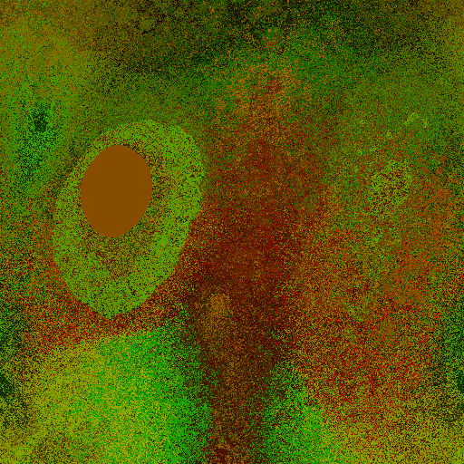
512 × 512 × 2 448.7 kB f_rest_labels.webpPIXELDECODED -
Colour codebook
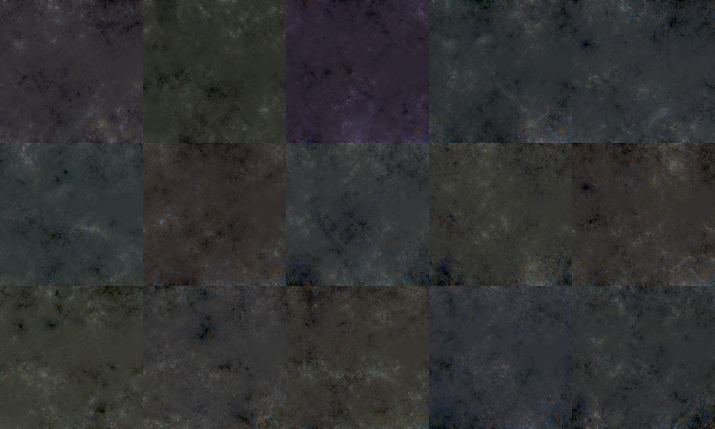
880 × 528 × 3 711.7 kB f_rest_centroids.webpPIXELDECODED
Smooth images are cheap images
Sorted images compress; SOG-XT sorts both the primitives and the color codebook with PLAS, Parallel Linear Assignment Sorting. A 3D scene has no natural order. Training hands you the primitives as a list in whatever order they happened to be created, and if you pour that list into a 2D grid you get noise. Image codecs are good at many things; noise is not one of them.
So we sort. The idea comes from Self-Organizing Gaussians: store each attribute as an image, arranged so that neighbors in the scene are neighbors in the image, and let an ordinary image codec do the rest. PLAS does the arranging, coarse-to-fine over the whole grid at once. It computes one permutation, from the positions, and that one permutation is applied to every attribute. So the same pixel is the same Gaussian in every plane, and the planes need no index to tie them together: the correspondence is the pixel position, and everything that follows on this page rests on it. Nothing is dropped or approximated; it is the same values in a better order. The two images below come from real encoder runs on the same scene and differ only in whether PLAS ran, so the byte counts under them are what the order alone is worth.
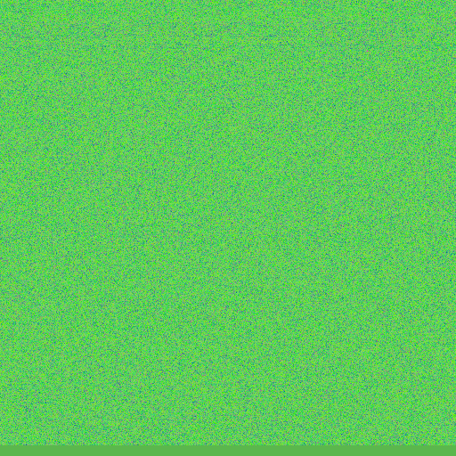
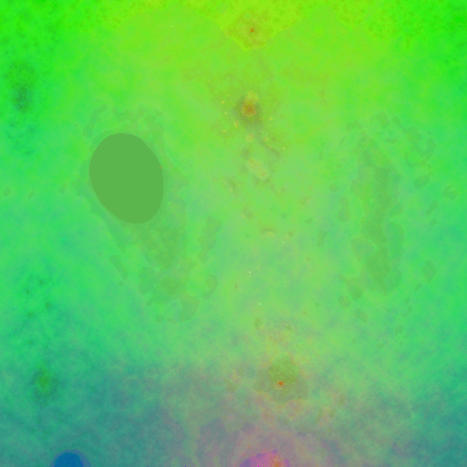
Sorting alone: 638 → 304 kB, −52 % on this plane. The same 262,144 values in both images, only their arrangement changes.
That is one plane. Across the whole container, switching primitive sorting off costs 615 kB on Bicycle at 256k primitives, for a quality difference in the third decimal of PSNR.
Where SOG-XT stands
If you know SOG you may wonder what is new. Two things happened after it was published. The
original coupled its layout to training, with densification, a smoothness regularizer and
quantization in one loop, so it could not easily be pointed at a scene you already had. And the
community turned the image-storage idea into a deployed format,
.sog, a pure
post-training encoder that orders primitives along a Morton curve and reduces the spherical
harmonics with k-means, storing the centroids in lexicographic order. SOG-XT is a
post-training encoder in the same sense: it runs on any compacted scene and needs no cameras and
no renderer. It differs from .sog in how it sorts.
Positions first. They are stored as a coarse byte and a fine byte, and the obvious thing is to sort by the coarse byte alone. We sort by both, the coarse byte weighted heavily and the fine byte lightly. The fine byte gets a vote, so it stops being pure noise.
The codebook gets sorted too
View-dependent color is far too big to store per primitive, so it is vector-quantized: k-means
reduces the spherical-harmonic coefficients to a codebook and each primitive keeps an index.
.sog stores that codebook as a lexicographically sorted list, an order the codec cannot use,
because two centroids next to each other in it need not look anything alike.
So we sort the codebook too, with PLAS, into 2D. The centroid grid becomes a smooth image in its own right, and each primitive’s assignment is stored as its centroid’s U and V coordinates in that grid, two 8-bit channels. Most of the gain is in the centroid planes. The index planes gain less, but they do gain: the primitives are sorted by position, and neighbors on a surface tend to share a view-dependent color, so they often point at nearby centroids, which after the sort have nearby coordinates. The index planes end up smoother than a random codebook order would leave them, though nowhere near as smooth as the positions. That is also where the UV packing earns its 12 kB at no cost in quality: both channels are coordinates in a smooth grid, where one flat index split into two bytes would leave its low byte as noise. The codebook grid itself stays a well-behaved image: its side follows from the number of active primitives after compaction and is clamped, so it has at most 256 × 256 = 65536 entries.
Source: paper Sec. 4. Both images are planes from real encoder runs on the same Garden compaction output, differing only in whether PLAS sorting ran; the byte counts are those planes' own encoded sizes.
The 48 disguises of a Gaussian
Every Gaussian has 48 equivalent forms, rotation-and-scale tuples that describe the same ellipsoid; PRAS picks, for each one, the form closest to a smoothed target, so a coarser quantizer suffices. Here is the quirk behind that. A primitive’s shape is a covariance matrix, but nobody stores the matrix. Everyone stores a rotation quaternion and three scales, and that mapping is one-to-many: permute the scales, flip the eigenvector directions, negate the quaternion, and you get completely different numbers describing exactly the same ellipsoid.
Multiply the three sources of redundancy together and you get those 48 equally valid forms. Which one a Gaussian ends up with is an accident of training. So the rotation and scale grids we sorted so carefully are full of variance that carries no information: two neighbors with near-identical shapes can be written in different disguises, and the codec dutifully spends bits on the difference.
PRAS (Parallel Representative Assignment Smoothing) fixes that. Like PLAS it works coarse-to-fine: blur the current grids to get a smooth target, then for every primitive try all 48 forms and keep the one closest to that target. Put more formally, PRAS chooses a representative of each Gaussian’s equivalence class, and it chooses locally, per primitive against a blurred target, not as a global optimum. The search never leaves the class, so every covariance stays unchanged up to floating-point round-off. Geometry and grid positions are untouched; only the form changes.
What do we get for it? Not a smaller file directly. PRAS’s gain is indirect: it is what licenses a coarser quantizer. A smoother grid survives coarser quantization, so with PRAS the quaternions are stored at q=99 (100 levels per channel), where without it we find that q=255, the full 8-bit 256, is needed for comparable quality. On Bicycle at 256k primitives that coarser quantizer is worth 161,748 B.
Read that way, the leave-one-out table’s own PRAS row is no contradiction, although it points the other way: remove PRAS but keep q=99, and the file gets 11,810 B smaller and 0.1104 dB worse, because the smoothed values sit a little away from where the rest of the pipeline had settled. Two rows, one measurement: the saving is in the quantizer setting, and the direct row is the price of being allowed to use it.
- ×6 scale permutations the three radii can be assigned to the axes in 3! ways, if compensated by 90° rotations
- ×4 eigenvector flips 2³ sign combinations, of which 4 are valid rotations with det(R) = 1
- ×2 quaternion double cover q and −q describe the same rotation
- =48 parameterizations per Gaussian all describing an identical ellipsoid
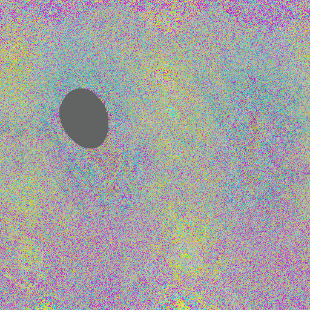
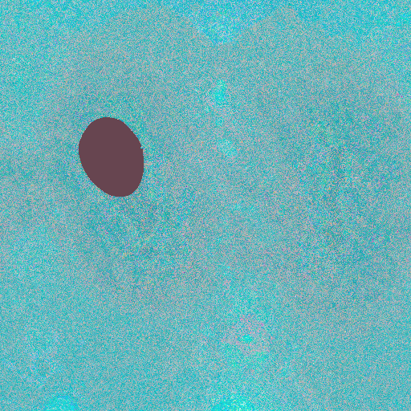
Source: paper Sec. 4, covariance-symmetry figure, and compression-ablation table. The two scale grids are real encoder output from one input encoded with and without PRAS; every other plane the two runs produce is byte-identical.
How it compares
On Mip-NeRF 360 and Tanks and Temples no method reaches vanilla 3DGS quality from a file as small as ours; on Deep Blending HAC++ stays ahead. Rate–distortion curves again, now for every method and dataset: pick any file size, read off the quality, and a curve that sits above another everywhere wins at every operating point.
Curve against curve
Tanks and Temples · PSNR · dataset mean
Rate–distortion curves per dataset: KISS-GS, HAC++ recomputed under our protocol, the uncompressed INRIA-Q reference, and self-reported literature values.
The horizontal INRIA-Q rule is the uncompressed reference: vanilla 3DGS trained with the original INRIA code for 40k iterations, to match our own total optimization budget. INRIA-Q is its name in every plot and table here. The question the table below answers is how small a file each method needs to reach that rule.
KISS-GS and HAC++ are both recomputed here, on the same images, at the same resolutions, with the same metric implementations. The faint curves are values their authors published; we plot them for context and do not claim to have verified them. Where a method’s smallest published file already reaches the reference, its reduction factor is a lower bound and the table says so. HAC++ on Tanks and Temples is such an entry, so our margin there is at least the distance shown.
The table shows it: on Tanks and Temples and Mip-NeRF 360, KISS-GS needs the smallest file to reach the rule. And the file decodes with nothing but WebP.
We are not winning everywhere. Deep Blending is where HAC++ stays ahead: its anchor-based learned representation absorbs the inconsistencies in those captures better than the standard-splat reconstructions we take as input, and the gap is there before our encoding runs. On both scenes, compressed HAC++ scores above uncompressed vanilla 3DGS. The paper calls this its main boundary. It sits in the reconstruction stage, the one stage a modular pipeline lets someone else replace.
One thing is easy to miss in a table of PSNR. Several published methods never reach reference quality on the perceptual LPIPS metric at any of their operating points, even where their PSNR looks strong; switch the plot’s metric, or open the full grid, and their LPIPS cells stay empty. KISS-GS reaches the reference on all three metrics on Mip-NeRF 360 and Tanks and Temples.
| Method | Tanks and Temples | Mip-NeRF 360 | Deep Blending | Synthetic NeRF |
|---|---|---|---|---|
| CodecGS†ICCV '25 | ≥53× | ≥72× | ≥76× | n/a |
| ContextGS†NeurIPS '24 | ≥42× | ≥55× | ≥187× | n/a |
| gsplat-1M†arXiv '24 | ≥60× | 52× | n/a | n/a |
| HAC†ECCV '24 | ≥49× | ≥46× | ≥150× | 47× |
| HEMGS†arXiv '24 | ≥69× | ≥59× | ≥229× | ≥57× |
| HAC++TPAMI '25 | ≥77× | 70× | 156× | — |
| KISS-GS, no adaptation | 227× | 104× | — | 10× |
| KISS-GS | 319× | 228× | 85× | 21× |
≥ the method's smallest published file already reaches reference quality, so its factor is a lower bound. — reference quality is not reached at any published operating point. † self-reported, not recomputed here.
All three metrics
| Method | Tanks and Temples | Mip-NeRF 360 | Deep Blending | Synthetic NeRF | ||||||||
|---|---|---|---|---|---|---|---|---|---|---|---|---|
| PSNR | SSIM | LPIPS | PSNR | SSIM | LPIPS | PSNR | SSIM | LPIPS | PSNR | SSIM | LPIPS | |
| CodecGS† | ≥53× | — | — | ≥72× | ≥72× | — | ≥76× | ≥76× | — | n/a | n/a | n/a |
| ContextGS† | ≥42× | ≥42× | — | ≥55× | ≥55× | — | ≥187× | ≥187× | — | n/a | n/a | n/a |
| gsplat-1M† | ≥60× | 44× | 26× | 52× | 57× | 28× | n/a | n/a | n/a | n/a | n/a | n/a |
| HAC† | ≥49× | 48× | — | ≥46× | ≥46× | — | ≥150× | 129× | — | 47× | — | — |
| HEMGS† | ≥69× | ≥69× | — | ≥59× | ≥59× | — | ≥229× | ≥229× | — | ≥57× | — | — |
| HAC++ | ≥77× | 68× | — | 70× | 36× | — | 156× | 156× | — | — | — | — |
| KISS-GS, no adaptation | 227× | 104× | 60× | 104× | 73× | 40× | — | — | — | 10× | — | — |
| KISS-GS | 319× | 131× | 72× | 228× | 109× | 64× | 85× | 98× | — | 21× | 14× | 14× |
Read across a dataset: a method can reach reference PSNR from a small file and never reach reference LPIPS at all. Source: the camera-ready reduction-factor table.
Can you spot the difference?
The same held-out view, from a gigabyte-scale .ply and from a compact KISS-GS container.
Choose one of four references and one of five KISS-GS budgets. The image switches in place, with
four magnifications available without moving the camera.
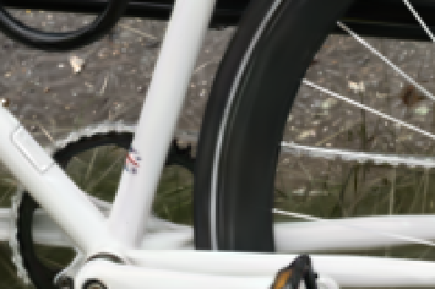
- Size
- 7.4 MB
- PSNR
- 25.973 dB
- LPIPS
- 0.2380
- Relative size
- 180× smaller
Every image is the held-out Bicycle view 17, held out of training for every reconstruction here.
Neither reconstruction in the default pair was trained on this view. The small file scores 25.973 dB against 24.806 dB, so the 180× smaller file is also the better one. There is a plain reason: compaction spends 10k extra iterations refining what it keeps, and pruning the primitives that were overfitting the training views tends to help on novel ones.
At 8× or 12× the trade becomes visible. Our smallest budgets lose high-frequency texture: thin geometry and foliage go soft. HAC++ at a comparable size keeps more PSNR and loses more of the perceptual detail that LPIPS measures. Those are different failures, and they are easier to judge here than in either metric.
Which parts earn their bytes?
Attribution one level down: every encoding component switched off in turn. The pipeline’s attribution stops at the stage level: 15.7×, 6.6×, 2.2×. Inside the encoding stage the same question can be asked of every component, and the paper’s leave-one-out table answers it. Each component is switched off in turn, on Bicycle at 256k primitives, and each line below is what removing it does. Baseline: 3.878 MB at 24.23 dB.
-
Coding view-dependent color through a codebook is worth 3.43 MB, and it costs 0.232 dB of quality.
the file nearly doubles without it, the single biggest lever here
-
Storing the grids as WebP rather than raw is worth 3.03 MB, at no measurable quality cost.
-
Quantizing the quaternions to a byte is worth 2.55 MB, and it costs 0.032 dB of quality.
-
Sorting the primitives with PLAS is worth 614.9 kB, and it costs 0.006 dB of quality.
-
Sorting the codebook centroids the same way is worth 42.4 kB, at no measurable quality cost.
-
Packing the codebook labels as UV pairs is worth 12.1 kB, at no measurable quality cost.
-
PRAS costs 11.8 kB, and it buys 0.110 dB.
the only row that trades the other way. Its own row is not its argument: what PRAS is really worth is the coarser quaternion quantizer it makes possible
-
Remapping the positions through a signed logarithm costs 519.3 kB, and it buys 7.551 dB.
not really a switch: without it 16-bit quantization spends its precision on empty space instead of on the surfaces, and the reconstruction collapses
The exact numbers
| Component | Δ size | Δ PSNR |
|---|---|---|
| view-dependent color codebooks | +3,434,816 B | +0.232 |
| WebP image compression | +3,030,148 B | ±0.000 |
| quaternion u8 quantization | +2,548,718 B | +0.032 |
| primitive PLAS sorting | +614,851 B | +0.006 |
| centroid PLAS sorting | +42,416 B | ±0.000 |
| label UV packing | +12,142 B | ±0.000 |
| PRAS | −11,810 B | -0.110 |
| means signed-log remapping | −519,272 B | -7.551 |
Baseline: 3.878 MB at 24.23 dB. Source: the camera-ready compression-ablation table.
Two of these cost nothing at all: sorting the codebook centroids and packing the labels as UV pairs save bytes with no measurable quality change, so there is no trade to weigh. The color codebook is the one place where compression measurably costs quality. Knowing that is more useful than hiding it in an average.
What the paper leaves out
How we got here, and the ideas that did not make it. We tried to be transparent in the paper about where each gain comes from and which ideas are ours. A paper is still not the place for how we got there, or for the graveyard of things that did not work.
How we got here. It began with frustration. The 3DGS compression literature is full of
impressive numbers, and it is hard to tell which come from ideas that help and which from
evaluation protocols that quietly differ from paper to paper. The leading methods are tightly
integrated, so you cannot take one apart to find out. Meanwhile Self-Organizing Gaussians had
grown up: the community adopted it as .sog, a deployed format that is already good. Could a
format that simple get all the way to the best methods out there, if its parameters were chosen
to hold quality while shrinking the file? To find out we built
ffsplat, a tool for trying post-hoc coding ideas on finished
scenes with every result measured the same way. Most of the time went into that tool, and into a
fine-tuning architecture where the differentiable parts (quantization-aware training) and the
non-differentiable one (the PLAS sort) had to work together in configurable experiments. The
pipeline on this page is what survived.
What did not work. For every component that made it into the paper there are several we tried and gave up on. Some we tried too early and they might work now; some surely work in other people’s papers. A sampler:
- One canonical form for rotation and scale. Flipping quaternion signs, fixing a canonical quaternion, three-channel quaternions with renormalization, other covariance parameterizations. As pure post-hoc re-parameterizations of a finished scene, and with a decoder that has to stay a few array operations, none was a clean win over the whole scene set, and the ones that did win were too expensive to decode. A parameterization the reconstruction is trained in from the start is a different experiment, and this list says nothing about it. PRAS came out of giving up on the post-hoc route: keep every valid form and choose one per primitive.
- Sorting more than once. The idea is appealing: sort with PLAS, fine-tune to repair the quantization errors, then sort again because the fine-tuned values have a new structure. But the sort is not differentiable, so every re-sort restarts the optimization from a new layout, and that may be why it never paid off for us. (We do re-run PRAS during fine-tuning; it keeps the layout and only changes forms.)
- More vector quantization. Codebooks for attributes other than color, residual vector quantization (standard in several 3DGS compression methods), separate codebooks per spherical-harmonic band. Nothing convincing.
- Lossy image codecs. The most tempting one: swap the lossless codec for a lossy one and win a large factor. Except the attribute grids are not natural images. Every pixel is one primitive and every value matters, especially after quantization, and on scenes with few primitives lossy coding is actively harmful. It is also the mirror image of fine-tuning. Both accept a loss induced by quantization; the difference is who owns the quantizer. In fine-tuning it is ours, a fixed and known step the training can adapt to. A lossy codec owns its own, content-adaptive and opaque to the training loop, so there is nothing fixed to adapt to, and the loss simply lands on the scene.
Small things. WebP’s slowest encoding method (method=6) buys a few percent over the
method=4 the paper uses, at a much longer encoding time; 4 is the knee, nearly as small and
still fast. Lossless WebP, AVIF and minimized PNG land within a few percent of each other, WebP
with a small edge that depends on the scene.
Have we kept it simple?
Simplicity is a great virtue but it requires hard work to achieve it and education to appreciate it. And to make matters worse: complexity sells better. — Edsger W. Dijkstra, 1984
No. Not entirely, and it would be dishonest to claim otherwise.
The encoder is a whole pipeline: a compaction recipe built from two published pruning schemes, a vector-quantized color codebook with its own 2D sort, a symmetry-resolution algorithm, and an optional fine-tuning stage with the codec in the loop. That is a lot of machinery. We built it that way on purpose, so that each stage’s contribution can be measured instead of melting into one number nobody can take apart.
But all of it lives on the encoder side, and it runs once. What ships to every device that has to open the file is the decoder, and the decoder is 202 lines of NumPy doing this:
That asymmetry is the point of the paper. Put the complexity where it runs once; keep it out of the place that runs everywhere. State-of-the-art 3DGS compression does not need a complicated deployment stack.
The proof has been on screen the whole time. The live scene arrived as those same nine images, went through those same operations in your browser, and has been rendering as ordinary 3D Gaussians while you read about how it got that small.
- read the container's metadata the grid side, the image codec, and the stored range of every attribute
- decode each plane as an ordinary image nine images, one per attribute group, through whatever the platform already has; in a browser, that is the built-in WebP decoder
- map every byte back into its range one affine step per attribute, from the ranges the metadata carries
- rebuild the positions two byte planes are one 16-bit word per axis, and the signed logarithm that made the distribution quantizable is undone
- untile the color codebook fifteen tiles of three channels become 45 spherical-harmonic coefficients per centroid
- look up each primitive's color the label plane's two channels are the centroid's coordinates in that codebook
- drop the inactive cells the mask plane says which grid positions carry a primitive at all
- emit vanilla 3DGS columns x, y, z, the spherical-harmonic coefficients, opacity, scale and rotation — the same columns any 3DGS renderer already reads
How long it takes
- 108 ms256k primitives
- 192 ms512k primitives
- 347 ms1024k primitives
- 1.24 GBpeak memory at 1024k
- numpy · Pillow · PyYAMLdependencies
- WebPformats needed
Reference Python decoder on a Threadripper PRO 5955WX; medians over seven kept runs, file reads included, PLY writing excluded. Unoptimized and single-threaded; the point is the order of magnitude, not the milliseconds.
Paper, code, citation
If KISS-GS is useful to you, we would appreciate a citation. The encoder, the format and the viewer that renders this page all live in ffsplat.
@inproceedings{morgenstern2026kissgs,
title = {{KISS-GS}: {3D} Gaussian Splatting Compression Kept Simple},
author = {Morgenstern, Wieland and Branschke, Friedrich Elias and
Fleischmann, Florian and Szatmari, Adrian and Schlack, Paul and
Barthel, Florian and Eisert, Peter and Hilsmann, Anna},
booktitle = {European Conference on Computer Vision (ECCV)},
year = {2026}
}